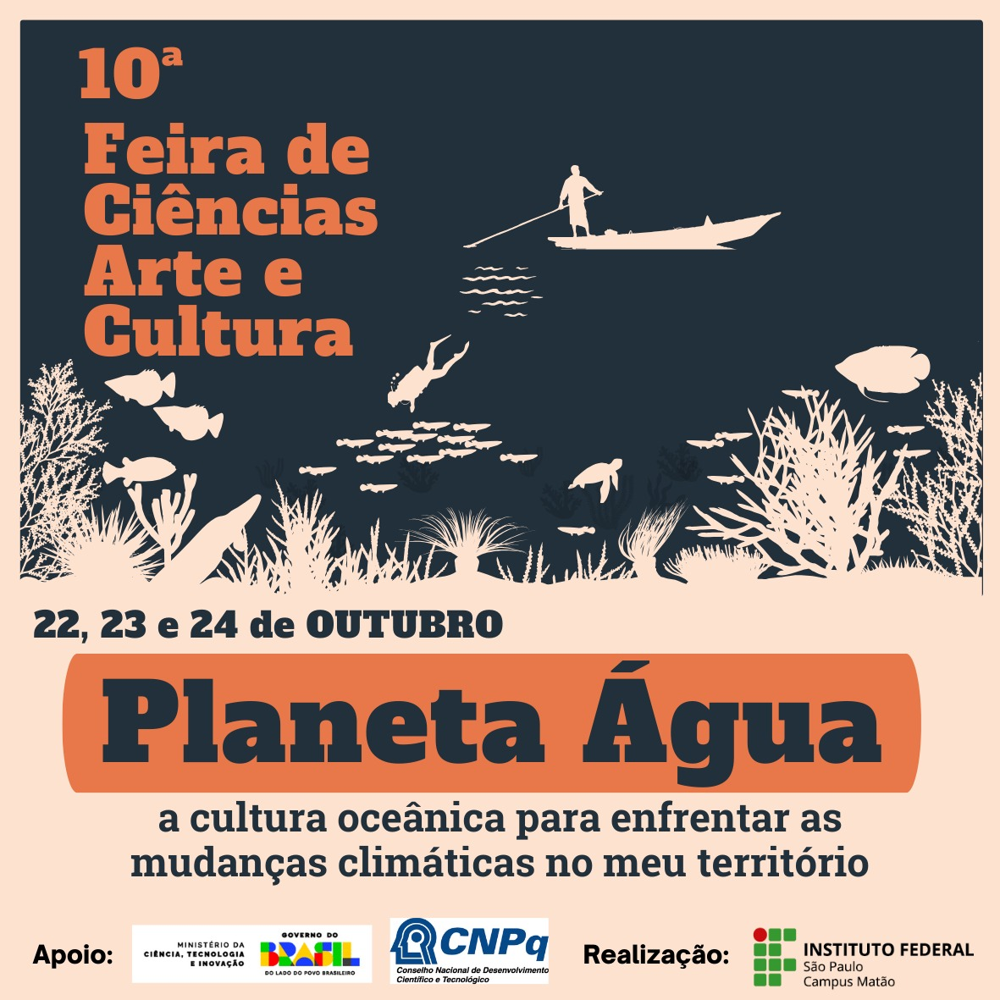

11ª Feira de Ciências, Arte e Cultura
"CIÊNCIA DELAS: Meninas e Mulheres nas Ciências"
A 11ª edição reafirma o compromisso do IFSP Matão com a popularização da ciência e o protagonismo estudantil. Homenageamos as contribuições femininas históricas e contemporâneas nas Ciências Humanas, Sociais, Artes, Linguagens, Matemática e Ciências da Natureza.

ℹ️ Informações Gerais (2026)
- Público-alvo: Alunos do 9º ano do ensino fundamental e dos 3 anos do ensino médio (IFSP Matão e demais escolas).
- Equipes: 5 estudantes + 1 orientador (e coorientador opcional).
- Requisitos Temáticos: Vínculo com ao menos 2 ODS da ONU e homenagem a uma mulher cientista/pesquisadora.
- Taxa: Evento 100% Gratuito.
Contagem Regressiva para a Feira
28 a 30 de Outubro de 2026 — IFSP Matão
Normas & Regulamento 2026
Conheça as diretrizes para participar da 11ª Feira de Ciências, Arte e Cultura do IFSP Matão.
👩🔬 Diretrizes do Tema Central
- • Tema: Ciência Delas (Meninas e Mulheres nas Ciências).
- • O projeto deve homenagear ou fundamentar-se no trabalho de pelo menos uma mulher cientista, pesquisadora ou intelectual.
- • Deve apresentar relação clara com ao menos 2 Objetivos de Desenvolvimento Sustentável (ODS/ONU).
👥 Equipes e Categorias
- • Composição: Até 5 estudantes por grupo + 1 professor(a) orientador(a).
- • Elegibilidade: Estudantes do 9º ano EF e do 1º ao 3º ano do Ensino Médio.
- • Áreas: CNT (Natureza), LT (Linguagens), MT (Matemática) e CHST (Humanas/Sociais).
Projetos Inscritos (2026)
Confira a lista dos trabalhos e homenagens científicas confirmadas para a 11ª edição.
| Escola | Tema do Projeto / Cientista Homenageada | Integrantes | Orientador(a) |
|---|---|---|---|
| IFSP-MTO | Ficou fora da geladeira: ciência ou sorte? Mary Engle Pennington e a ciência dos alimentos seguros | Gabriella Pastori, Lorena Lourenço dos Santos, Luana Barroso Alvares, Manuela de Moraes Gomes, Sofia Barbosa | Bruna Drielen Ferreira |
| IFSP-MTO | EcoAçaí: uso de resíduos amazônicos na produção de carvão ativado magnético para tratamento de água | Felipe Amaral de Freitas, Lara Lopes, Bruno Galvão Damiani, Leonardo Cristiano Moutinho, Matheus Brumatti Joaquim | Carla Yuri Kisen |
| IFSP-MTO | Do Leite ao Iogurte: A Ciência por Trás da Transformação | Allana Tayane Silva, Caroline Oliveira Dias, Gabriela Mendonça, Larissa de Souza Reis, Marina Malagoli Rodrigues Lopes | Caroline Pigatto De Nardi |
| IFSP-MTO | Ágar-ágar: da cozinha ao laboratório | Lara Teixeira de Souza, Thauany Forcel Campos, Ana Beatriz do Amaral Miranda, Larissa de Matos Ilario, Adrieli Sabrina da Silva | Caroline Pigatto De Nardi |
| IFSP-MTO | Quem somos nós?: Retratos simbólicos da singularidade humana | Gabriele Melo, Sofia Falconi, Pedro Mancini, Livia Guimarães, Maria Júlia Toledo | Chris Tragante |
| IFSP-MTO | Mulheres do século XX na ciência dos alimentos | Heloa Vitoria Sampaio, Maria Eduarda Arroyo, Isabela Gonçalves Agostini, Maria Júlia Guirra, Guilherme Maschiari Vilela | Claudia Regina Cançado Sgorlon Tininis |
| IFSP-MTO | Do Álbum da Copa ao Meio Ambiente: resíduos pequenos, grandes impactos | Íris Eduarda Forcel Roncada, Júlia Gabrieli Bessi, Lara Martins Cacavelli, Nauani Araujo Ferreira, Sarah Beatriz Doria Alves | Daniara Cristina Fernandes |
| IFSP-MTO | A Ciência da Água: As Descobertas de Márcia Barbosa | Adrian Heinrick de Souza Rodrigues, Gustavo Moratta da Silva, Matheus Paviani, Vitória Oliveira Muniz, Wilton Silva Rodrigues Júnior | Daniela Cristina Selmini |
| IFSP-MTO | Influência de microrganismos eficientes na germinação de plantas nativas do cerrado | Gabriela Dias, Manuela Setin Cacimiliano, Samarah Hikari Mantovani Nagata, Richard Ueno, Maria Julia de Almeida | Eliziane Carla Scariot |
| IFSP-MTO | Metais da Vida: a Química Bioinorgânica da Professora Ana Maria da Costa Ferreira e o Papel das Mulheres na Ciência Brasileira | Maria Eduarda dos Santos Moura, Ana Júlia da Silva, Livia Messi Simis, Maria Eduarda Piedadi Scardoelli, Laine Souza | Filipe Camargo Dalmatti Alves Lima |
| IFSP-MTO | O Magnetismo na Escala Atômica: A Evolução do Nanomagnetismo no Brasil e o Pioneirismo da Professora Helena Maria Petrilli | Júlia Vitória Castro, Samuel Arjona Teixeira de Carvalho, Nivia Thaís do Prado Santos, Angelina Duarte Bido, Ruan Felipe Ribeiro Rocha | Filipe Camargo Dalmatti Alves Lima |
| IFSP-MTO | Mulheres em Camadas: a Química dos Materiais Lamelares e o Legado Científico da Professora Vera Regina Leopoldo Constantino | Maria Eduarda Cuzin de Oliveira, Mariana Aparecida de Andrade, Nicolly Lorena dos Anjos, Isabela Silva Barreto, Miguel Baldoino Araujo | Filipe Camargo Dalmatti Alves Lima |
| IFSP-MTO | Do Lixo ao Luxo: Kombucha Sustentável como Alternativa de Baixo Custo | Nicolas Kenji Sugahara, Sthefany Rodrigues Dal Rovere, Maria Eduarda Alberice, Nicoly Gavioli Marinho, Gabriel Maciel Cyniro de Carvalho | Jane Karla de Faria Borges Machado |
| IFSP-MTO | Da Casca ao Pote: Ciência, Sustentabilidade e o Aproveitamento Integral dos Alimentos | Maria Eduarda dos Santos, Isabelle Nataly Pires da Silva, Cauã Correria dos Santos, Otavio Venâncio Ferreira da Silva, Guilherme Venceslau de Melo | João Pedro Bueno de Oliveira |
| IFSP-MTO | Maria Firmina dos Reis e a produção do conhecimento negro no Brasil | Jaqueline de Souza Machado, Livia Maria Pereira, Laura Abrantes Lobão, Ana Lívia dos Santos, Heloísa Caroline Teodoro Marcelino | Jonatan dos Santos Donato Alves |
| IFSP-MTO | Centenário da visita de Marie Curie ao Brasil: 1926 - 2026 | Sophia Gabrielle Alves da Silva, Mirela Zanoni Gimenez, Lucas Eduardo Negri, Leonardo Miguel de Souza Trindade, Edvaldo Junior Silva Araújo | José Antonio Maruyama |
| IFSP-MTO | De origem humilde à pesquisadora internacional: a saga da araraquarense Heloisa Helena Barretto de Toledo | Isabelly Rebeca de Oliveira, Jhenifer Lopes, Maria Júlia Miquelino, Kauane Vitória Nunes da Silva, Maria Emanuely Schimicoski | Juliana Barretto de Toledo |
| IFSP-MTO | Mulheres na Ciência: Ana Primavesi e a Revolução Agroecológica | Maria Eduarda Janini, Yasmim de Paula Silva, Yasmim Vitória Vieira Miranda, Vitória Luciana Martinelli, Eduardo Francisco Barbosa Andre Chrispim | Leandro Vieira |
| IFSP-MTO | Representação da Cultura Indígena no Cotidiano | Maria Candida Ruiz, Vitória Muniz, Gabrielly Voltolini, Sal Fisher Paiva, Hideki Cael Tavares da Silva | Valquíria Tenório |
| IFSP-MTO | Ao infinito e além: Mulheres na astronomia | Byanka Nayana Bordin, Evelyn Nicoly da Mota Queiroz, Ricardo Luís Felipe Filho, Vivian Isabella Vomiero Marcatto, Leticia Aparecida Ferreira de Souza | Valquíria Tenório |
| IFSP-MTO | Bactérias que Alimentam o Mundo: A Revolução Verde da Agricultura Sustentável | Cecília Calegari da Silva, Evellyn Moreira Rosa, Gabriela Rodrigues Morais, Igor Ferreira Master, Otávio Augusto Sena Padilha | Vívian de Oliveira Lima |
| IFSP-MTO | Reconstruindo Vidas: O Papel das Mulheres Brasileiras na Medicina Regenerativa e no tratamento do câncer | Jenifer Santos Luiz, João Daniel Gonçalves Ferreira, Vitor Gabriel Veríssimo da Silva, Yasmin Maia de Morais, Pedro Zoppi | Vívian de Oliveira Lima |
Submissão de Trabalhos (2026)
Submeta o resumo da sua equipe para a 11ª Feira de Ciências, Arte e Cultura do IFSP Matão. Certifique-se de seguir o modelo de resumo oficial disponível abaixo.
📝 Acessar Formulário de InscriçãoModelos Oficiais de Submissão
Modelo de Resumo (2026)
Utilize o template oficial em formato Word para elaboração do seu resumo expandido. Inclui a indicação das Áreas, ODS da ONU e a Mulher Cientista Homenageada.
Modelo do Painel
O modelo padronizado de painel/banner para as apresentações durante a feira em Outubro será disponibilizado em breve.
Cronograma Oficial (2026)
Programação oficial dos dias da 11ª Feira de Ciências, Arte e Cultura (28 a 30 de Outubro de 2026).
| Horário | 28/10/2026 (Quarta-feira) | 29/10/2026 (Quinta-feira) | 30/10/2026 (Sexta-feira) |
|---|---|---|---|
| 07h00 – 12h00 | Montagem dos estandes | Sem atividade | Apresentação dos trabalhos |
| 12h00 – 13h00 | Almoço | Almoço | Almoço |
| 13h00 – 17h00 | Montagem dos estandes | Apresentação dos trabalhos | Desmontagem dos estandes |
| 17h00 – 18h30 | Jantar | Jantar | Arrumação das Salas |
| 18h30 – 20h30 | 19h00: Abertura oficial e atração cultural | Apresentação dos trabalhos | -- |
Nossa História & Acervo
O evento teve sua primeira edição em 2016, nascendo da necessidade de promover a iniciação científica e a integração escolar. Desde sua origem, a feira é realizada em consonância com a Semana Nacional de Ciência e Tecnologia (SNCT), integrando o calendário nacional de popularização do conhecimento.

10ª Edição10ª Feira de Ciências (2025)
Relembre os trabalhos e informações da 10ª edição sobre a Cultura Oceânica e sustentabilidade.
Projetos de Destaque (2025)
Conheça os trabalhos 1º, 2º e 3º colocados premiados nas diferentes categorias da feira de 2025.
Entre em Contato
Tem alguma dúvida? Envie uma mensagem para a comissão organizadora.
feiradeciencias.mto@ifsp.edu.br
IFSP Campus Matão